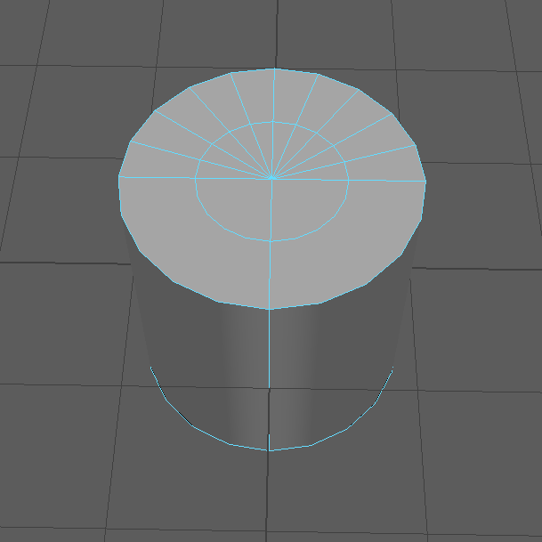

Objective : To make a object Follow a path
Step1: Create the Object (Say a cylinder). Give it a cap
Note: Two ways to delete the edges:
Method 1: Select the Edges & Press Delete

Method 2: Select the edges. Shift+Left Click --->Delete Edge


Step 2: Create a loop at the center of the height

Step 3:Convert the middle loop (Polygon Edges to curve)
Select edge-> Modify->Convert->Polygon Edges to Curve -> Degree Select Linear->Convert

Step 4: Create the Model to follow the line

Step 5: Switch toAnimation Mode
First select the PolyToCurve1(i.e Path) the shift select the pCylinder2(Object)
Constrain-> Motion Path-> Attach to Motion Path
Now if we scrub the time line object will move only on the path

Step 6:Now we will make the speed of the object Uniform

We will go to Windows -> Animation ->Graph Editor

Select both the nodes and straighten it


Step 7: Now we will create Animation Snapshot

Take the default values set 2 in increment
Select the object(Cylinder in this case) and press apply

Step 8: To Lock the Changes Delete the History
Edit -> Delete By Type -> History